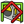
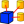

View
Contains all functions related to the display of the model, such as panels show, zoom, etc.. .
{kind=link}
{kind=link}
- Standard views
- Fit all
- Fit selection
- Axonometric 0
- Front 1
- Top 2
- Right 3
- Rear 4
- Bottom 5
- Left 6
- Rotate left
- Rotate right
{kind=link}
{kind=link}
{kind=link}
{kind=link}
{kind=link}
{kind=link}
{kind=link}
{kind=link}
{kind=link}
{kind=link}
{kind=link}
- Freeze display
- Save views...
- Load views...
- Freeze view
- Clear views
{kind=link}
{kind=link}
{kind=link}
{kind=link}
{kind=link}
- Stereo
- red/green
- quad buffer
- interleaved rows
- interleaved columns
- Stereo Off
- Issue camera position
{kind=link}
{kind=link}
{kind=link}
- Zoom see also Mouse Model
- In
- Out
- Box zoom (....)
- Document window
{kind=link}
{kind=link}
{kind=link}
- Toggle axis cross
- Texture mapping see Macro Texture Objects and Vista texture
- Visibility
- Toggle visibility (....) (... "space")
- Show selection
- Hide selection
- Toggle all objects
- Show all objects
- Hide all objects
- Toggle selectability
-  Toggle measurement
- Clear measurement
{kind=link}
{kind=link}
{kind=link}
- Toggle visibility
- Toggle navigation/edit mode
- Appearance...
- Viewing mode
- Material
- Display
- Point size
- Line width
- Transparency
- Line transparency
- Random color
{kind=link}
- Workbench
- None
- Arch
-  Assembly
-
 Complet
Complet - Draft
- Drawing
- Fem
- Immage
- Info
- Inspection
- Mesh
- OpenSCAD
- Part
- Part Design
- Plot
- Points
- Raytracing
- Reverse Engineering
- Robot
- Ship
- Sketcher
- Spreadsheet
- Start Center
- Test framework
- Web
{kind=link}
{kind=link}
{kind=link}
{kind=link}
{kind=link}
{kind=link}
{kind=link}
{kind=link}
{kind=link}
{kind=link}
{kind=link}
{kind=link}
{kind=link}
{kind=link}
{kind=link}
{kind=link}
{kind=link}
{kind=link}
{kind=link}
- Toolbars
- File
- Macro
- View
- Part Design
- Sketcher geometries
- Sketcher constraints
- Bolts
- Info
- FreeCAD Part
- Screw
- Draft Snap
- Panels
- Report
- Tree
- Property
- Selection
- Combo View
- Python console
- Status bar